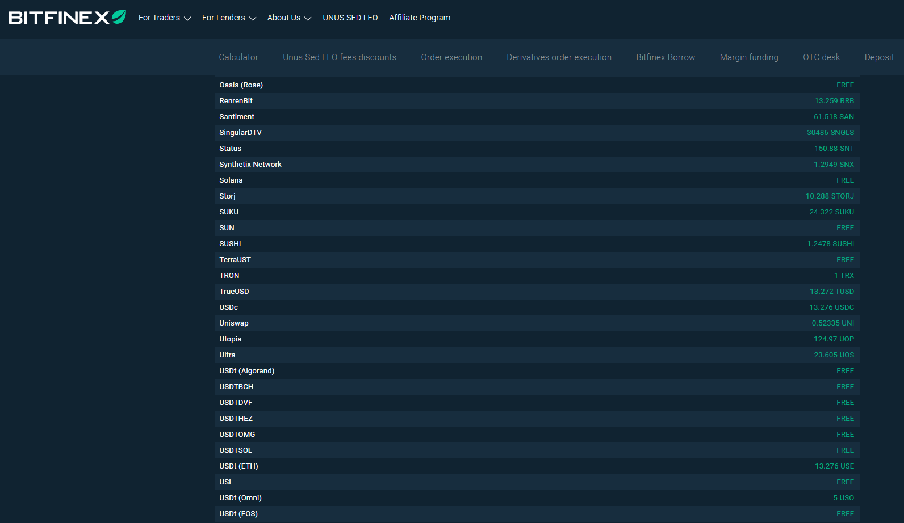

Hi there. In this page, I would like to point out that withdrawal of TerraUSD (UST) is free on the Bitfinex exchange (at time of writing). Free as in no withdrawal fees.
Bitfinex Fees Link with a screenshot showing the free withdrawal of TerraUSD (UST).

Although I am a bit new to the Bitfinex exchange, I find it a bit annoying that the minimum withdrawal limits information is not really accessible. You need to have the chosen crypto on the exchange and check the minimum limit for that crypto.
For TerraUSD (UST) the minimum withdrawal limit is 4.99176359 TERRAUST which is equivalent to 5USD.
For transferring UST to your Terra Station wallet, you actually do not need a Memo. Also you do not have to checkmark the Add a note to this withdrawal for your records.... It is enough to have the Terra Station address at the top of the Terra Station window and an amount of UST above 5USD. It is a good idea to do a small test transaction of just over 5UST to check that transferring funds from Bitfinex to Terra Station works.